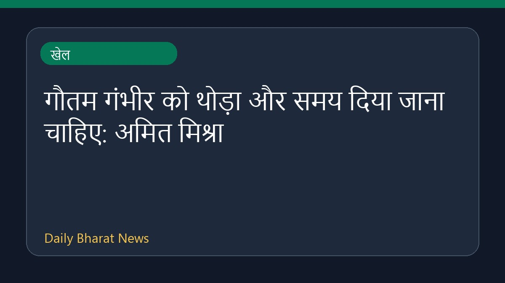
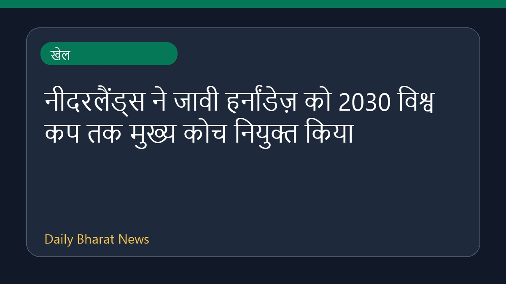
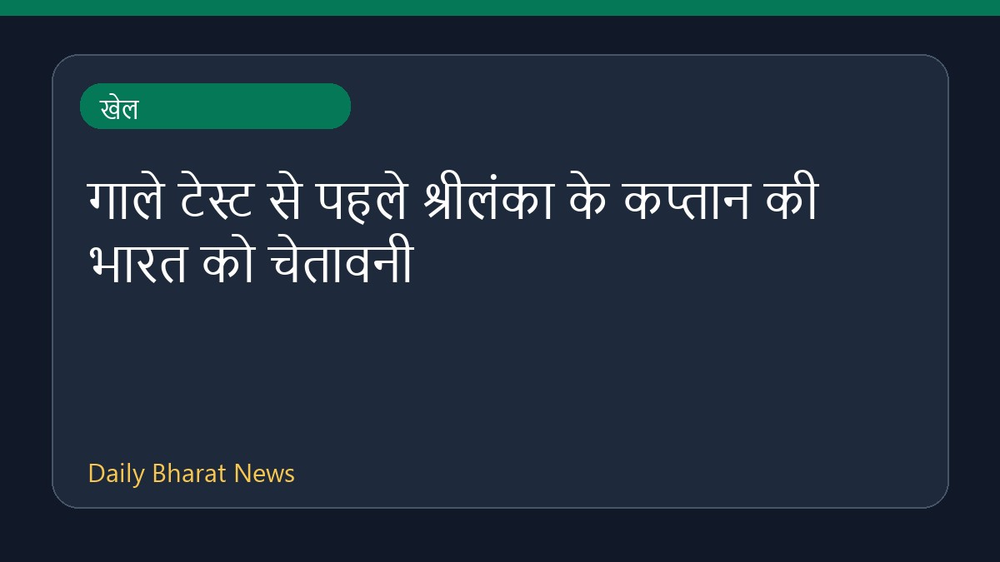

कनाडाई ओपन में नंबर वन एरिना सबालेंका को एलेक्जेंड्रोवा ने हराया

कनाडाई ओपन में विश्व की नंबर एक खिलाड़ी एरिना सबालेंका को उलटफेर का सामना करना पड़ा। उन्हें एलेक्जेंड्रोवा के हाथों हार का सामना करना पड़ा, जिससे वह टोरंटो क्वार्टरफाइनल से बाहर हो गईं। इस हार के बाद यूएस ओपन से पहले सबालेंका के खराब फॉर्म को लेकर चिंता बढ़ गई है। इसके अलावा इस टूर्नामेंट में कैमरून नोरी और जेसिका पेगुला को भी झटके लगे हैं। खेल समाचार स्रोतों के अनुसार, एलेक्जेंड्रोवा ने एक बार फिर सबालेंका को मात दी है।
मूल स्रोत: Sports News Sources
World number one Sabalenka upset by Alexandrova at Canadian Open - Al Jazeera ↗
World number one Sabalenka upset by Alexandrova at Canadian Open - Al Jazeera ↗
संबंधित खबरें

खेलगौतम गंभीर को थोड़ा और समय दिया जाना चाहिए: अमित मिश्रा
 खेल
खेलसिंकफील्ड और केर्न्स कप: वेस्ले सो आगे, दिव्या देशमुख ने कोस्टेनियूक को हराया

खेलनीदरलैंड्स ने जावी हर्नांडेज़ को 2030 विश्व कप तक मुख्य कोच नियुक्त किया

खेल